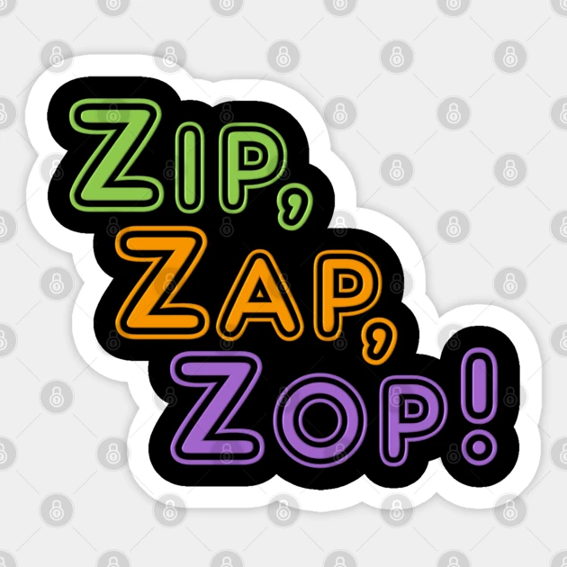

“ZOP”, o aluno responderá pelo seu próprio nome. Quando disser “ZIP, ZAP, ZOP”, todos deverão trocar de lugar no círculo, ficando ao lado de pessoas diferentes, para que possam também conhecer outros alunos e o professor poderá perceber se ele está absorvendo a ideia de direita e esquerda.
As crianças adoram brincar de ZipZapZop.